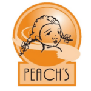
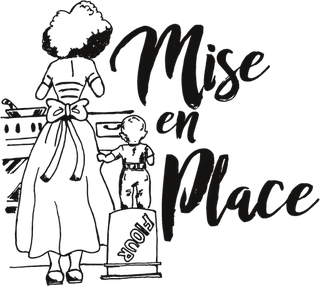

Rome’s Joy Companies
Meet the family.

Peach’s
Southern breakfast & brunch, in three locations
Rome’s Joy Catering
Full-service catering & event planning
parkwaysocial
Parkway Social
Coworking & events in the historic Parkway Ballroom
blanc
Blanc Gallery
Fine art and a culture of conversation
R.J.C. Sausage Co.
Chicken sausage, made in Bronzeville

Mise En Place
Culinary & hospitality job training